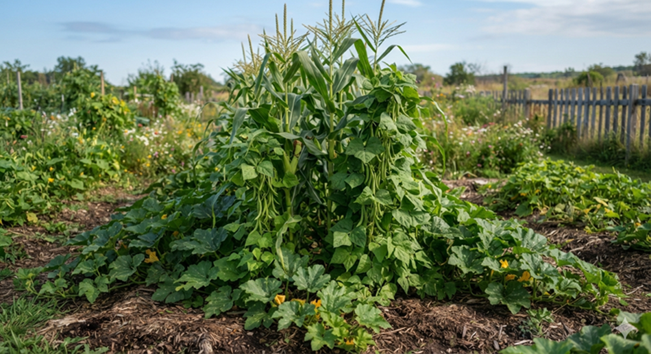
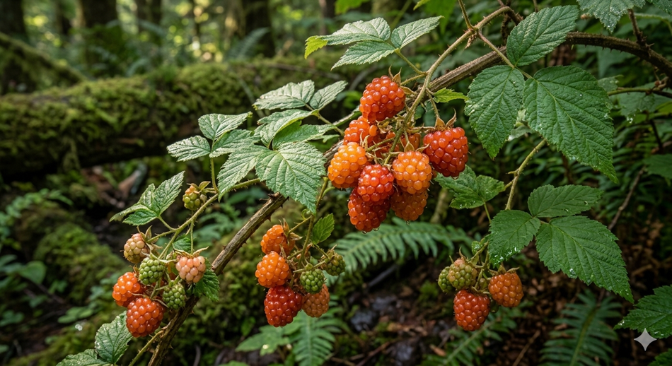
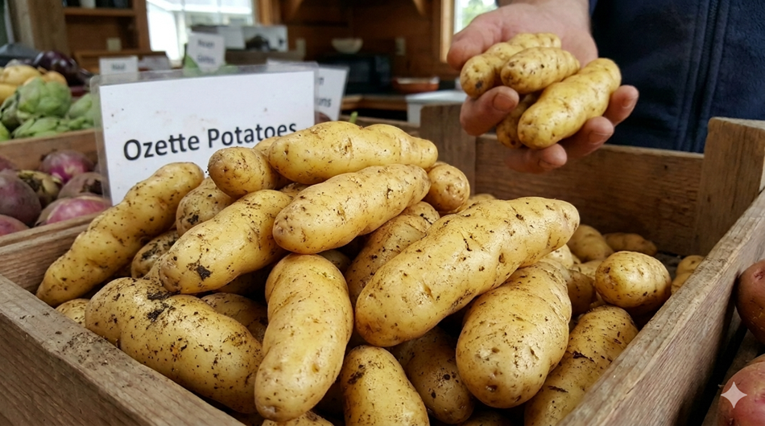

Edible Art
Indigenous food is a profound art form that tells a story of survival, cultural identity, and deep ecological wisdom. It extends far beyond basic nutrition, transforming food into a sensory canvas where the plate reflects the history and geography of a community.
The Three Sisters (corn, beans, squash) create an ecological masterpiece that teaches mutual support to all who see them. See more from Agriculture Canada.

The Coast Salish have been preserving berries year-round and using them as medicine before modern science was born to explain how it worked. They understood the delicate balance of nature and listened to the forecast given by the berries during harvest. Learn more from Kw’umut Lelum.

Despite colonial disruption, the restoration of ancestral crops, such as the Ozette potato, are edible masterpieces of cultural resistance and heritage. Hear more from CBC News.

Back to the top of page